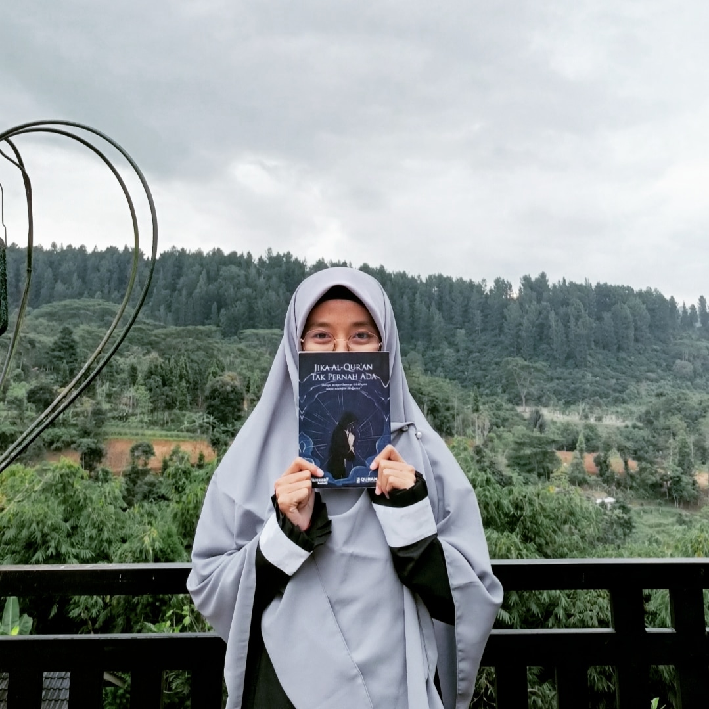

Introduce
Selamat datang di blog saya. Blog ini berisi tulisan-tulisan saya tentang Tech, Productivity, & Self Development. Enjoy!
All About Tech
Selamat datang di blog saya. Blog ini berisi tulisan-tulisan saya tentang Tech, Productivity, & Self Development. Enjoy!
Assalamu'alaikum. Hai, perkenalkan nama saya Tita Suratmi Somantri. Gadis berusia 25 tahun yang bertempat tinggal di Tangerang. Saat ini saya sedang belajar di dunia IT bersama Dicoding. Sebelumnya saya menempuh pendidikan S1 jurusan Pendidikan Guru Sekolah Dasar. Namun, di tahun ini saya bertekad ingin swirch career menjadi seorang web developer.
Kenapa harus belajar tentang Teknologi Informasi dan Komunikasi di waktu yang serba online ini? alasannya karena pada zaman ini semua keperluan dapat dilakukan secara online tanpa harus perlu pergi ketempat tersebut. Misalnya jika ingin membeli atau memesan tiket pesawat kamu tidak perlu lagi ke tempat penjualan tiket pesawat, kamu bisa langsung membelinya sendiri dengan menggunakan gadgetmu.
Dengan perkembangan teknologi informasi saat ini, semua kegiatan manusia dipermudah dengan adannya web. Dengan web kamu dapat berbelanja, belajar, juga dapat bekerja tanpa harus kekantor, serta masih banyak lagi yang lain. Oleh sebab itu, mengapa penting belajar teknologi informasi agar kita tidak tertinggal dari dunia yang sudah semakin cepat ini.
Teknologi informasi merupakan teknologi yang digunakan untuk membuat, mengubah dan menyimpan serta menyebar luaskan informasi. Teknologi komunikasi adalah perangkat keras (hardware) yang berfungsi untuk mengumpulkan, memproses, dan menukar informasi. Di era modern ini ini kebanyakan kegiatan manusia berkaitan dengan web. Sebagai contoh waktu dulu kamu hanya mendapat pelajaran dari guru disekolah, namun di time serba online ini belajar bisa dilakukan dimana saja, karena materi atau bahan belajarnya sudah terdapat banyak baik dalam bentuk dokumen maupun video tutorial.
Selain itu pada era yang serba digital akan ada banyak pekerjaan baru yang hadir, namun banyak juga pekerjaaan-pekerjaan yang mulai hilang, oleh karena itu penting untuk mempelajari teknologi informasi dan komunikasi adalah agar kita tidak tergerus oleh arus globalisasi yang semakin cepat. Namun perlu di perhatikan juga agar tidak terjerumus ke dunia negatif, perlunya ada pemilahan-pemilahan pengajaran yang kamu lakukan. Karena di web semua hal ada dari yang bersifat positif sampai yang dapat menjerumuskan ke sisi negatif.